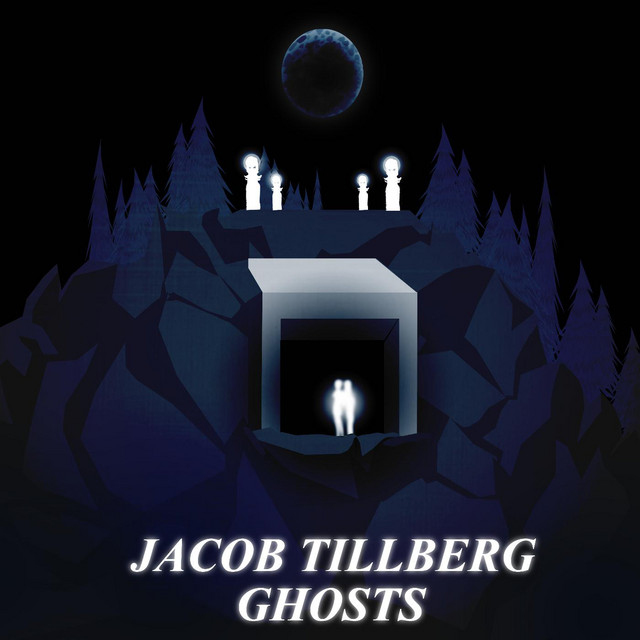
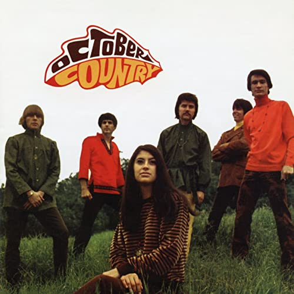
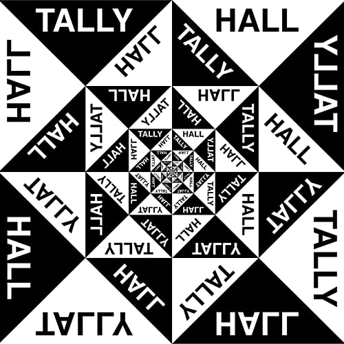
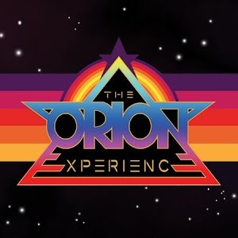
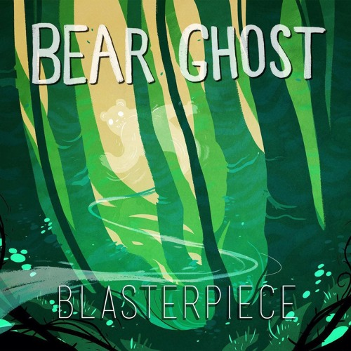
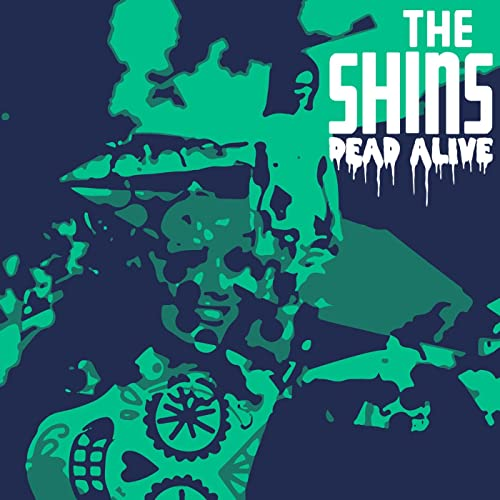
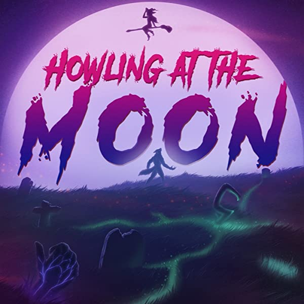
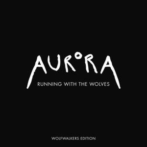
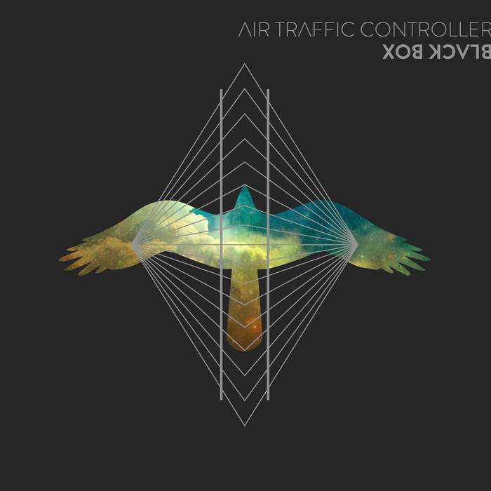

All Hallows' Eve, Witches!
Halloween Songs To Stick it To Corporate
- You're So Creepy
- Ghost Town - Ghosts
- Jacob Tillberg - My Girlfriend Is A Witch
- October Country - Turn The Lights Off
- Tally Hall - Obsessed With You
- The Orion Experience - Necromancin' Dancin'
- Bear Ghost - Dead Alive
- The Shins - All Hallows
- The Aviators - Running With The Wolves
- Auroura - Creature Of The Night
- Air Traffic Controller
You're So Creepy - Ghost Town
Lyric Exerpt:
For once why can't you just come and chase me
Dig up my grave and save my body
Now I'm rotting to the bone
But my heart's still beating
Hoping you won't leave me
Creepy girls, you're just my style
Blood-red lipstick, you don't smile
Falling victim to your fantasy
Damn, I love it that you're so creepy

Ghosts - Jacob Tillberg
Lyric Exerpt:
Do you remember that day in October?
The leaves were falling
just like me when it was over
One more day of sorrow
and I'll struggle to stay sober
Hope to see you later when I get older
I still remember the smell of your perfume
It hasn't left me since the day you made me blue
I think I saw you but I know I'm not supposed to
I must be dreaming 'cause I don't believe in ghosts

My Girlfriend Is A Witch - October Country
Lyric Exerpt:
Riding high
Leaving trails of smoke across the sky
On a broom
Glad that I am safe within my room
I know my girlfriend is a witch
Spells fill the air
I think I hear footsteps on my stair
Coming near
Her thoughts are telling me that she's here

Turn The Lights Off - Tally Hall
Lyric Exerpt:
Don't go in there
You'll become one
Freaky creatures
Monster party
Eyes of yellow
Scales and feathers
Tails in tethers
Turn the lights off
Bend the nightmare
You control it
Artful dodger
Easy does it
Shut the closet
Get under the covers
Snakes and lovers
Turn the lights off

Obsessed With You - The Orion Experience
Lyric Exerpt:
I've got your picture on my wall
I dream about you when I sleep
I go out of my way everyday just hoping that
I'll catch you walking down the street
I know just where you went to school
I know the names of all your friends
I got it bad again
An o-b-s-e-s-s-i-o-n
I know your middle name
I got a lock of your hair
I'm just a little bit insane
'Cause I think I see you everywhere
My friends, they just don't understand
They cannot see my point of view
They say it's gotten outta hand
And I'm obsessed with you

Necromancin' Dancin' - Bear Ghost
Lyric Exerpt:
This is it
Now we've found it, I'm astounded
Every town will be surrounded
By a throng of marchin' death
Delicious the riches, they glisten ahead
It's a craze
They'll devour every hour
Of these endless, non-progressive inundations of their kind
And lucky for you, you're the next one in line
When I'm necromancin', everyone's dancin'
No one can stop me, I dare you to try
The dead are infused with sensational groove
And they're comin' for you now
There's nowhere to hide
Yeah
(waltzin' forth, here they come)
I'm raisin' the dead
(everyone turn and run)
I'm lovin' the dread
(killer moves that will stun)
Let's make some evil

Dead Alive - The Shins
Lyric Exerpt:
On a walk in a fragile state
Weird angles coming over the wire
Back home we got girls in braids and they're on
Roller skates and they roll any way they like
From my town I can always look down
Down from my nose to the fish in the barrels
But in the wiles of human life
There are pity nights and a ray of gentle eyes
So tonight
Dance and cry
You're dead alive

All Hallows - Aviators
Lyric Exerpt:
Still air, the harvest moon in the sky
Fools scared of their supernatural demise
Raised hair on the back of your neck
Tells you something is lurking tonight
The hymns of the October wind are howling through the trees
The sun sets on a night to bring the bravest to their knees
A thin divide is lifted letting spirits through the fray
When shadows fall the beasts have come to scare us all away
Dark saints
All hallows
The villains hunt before they're
off to the gallows on a
Cursed night
A bone chiller
Cover your eyes,
'cause you're living a thriller

Running With The Wolves - Aurora
Lyric Exerpt:
Go row the boat
to safer grounds
But don't you know
we're stronger now
My heart still beats
and my skin still feels
My lungs still breathe,
my mind still fears
But we're running out of time
Oh, all the echoes in my mind cry
There's blood on your lies
The sky's open wide
There is nowhere for you to hide
The hunter's moon is shining
I'm running with the wolves tonight
I'm running with the wolves
I'm running with the wolves tonight
I'm running with the wolves

Creature Of The Night - Air Traffic Controller
Lyric Exerpt:
I am a creature of the night
It's the only thing that feels right
Yeah, it's the only way that I get by
I hope you don't mind
Not as inspired in the daylight
I'm too distracted by everything in sight
If I just wait until everybody says goodnight
I'll get it done right
Midnight comes around there's no way I am laying down
I'm on a roll, I'm in control
I've got to keep the oil burning
And my little wheels a-turning up the road
It's all I know